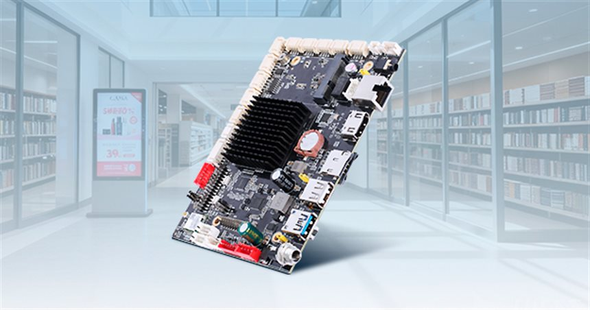

BOARD LEVEL
Android Embedded Board
Black Android mainboard for signage and terminal builds: finned heatsink over the processor, RJ45, four USB ports, HDMI, audio jack, DC jack and colour-coded terminal blocks.
A board-level Android platform used behind digital signage panels and compact self-service terminals. The photo shows a finned black heatsink over the processor, a row of white FPC connectors along the top edge for panel, backlight and touch cables, RJ45 Ethernet, four USB host ports, HDMI, a 3.5 mm audio jack, a DC power jack, red terminal blocks for power and serial wiring, a microSD slot and the reset and power keys. Because everything needed by a signage build sits on the board, the enclosure, carrier plate and cable set are what get designed around it.
Interfaces on this unit
Interfaces listed below are the ones visible on the reference photos. Port counts and levels for your build are confirmed in the specification review.
- RJ45 Ethernet
- 4 x USB host ports
- HDMI display output
- 3.5 mm audio jack
- DC power jack
- Red terminal blocks for power and serial wiring
- White FPC connectors for panel, backlight and touch
- microSD slot, reset and power keys
Configuration options
Points to agree before a quotation. Final availability, interfaces and ratings depend on the selected platform.
- Memory and eMMC storage size
- Android version and launcher lock-down
- Wi-Fi and Bluetooth module population
- Carrier board, enclosure and cable-set design
- Remote update and device management approach
- Long-term supply and revision control
Typical applications
01
Digital signage and advertising players
02
Mainboard for compact self-service terminals
03
Queue display and information screens
04
Embedded Android appliances
Before you request a quotation
Which Android version and runtime does the application need?
Share the answer together with the installation environment, quantity and target schedule so the configuration can be assessed.
Which panel, backlight and touch cables must the FPC connectors accept?
Share the answer together with the installation environment, quantity and target schedule so the configuration can be assessed.
How are firmware updates delivered after deployment?
Share the answer together with the installation environment, quantity and target schedule so the configuration can be assessed.
How long must this board revision remain buyable?
Share the answer together with the installation environment, quantity and target schedule so the configuration can be assessed.
Discuss your project
Tell us the application, environment and I/O requirements. We reply with the questions that still need answers and the next step.
Discuss Android Embedded Board
Kiosks using this platform
Terminals from our build range that typically run on a computing unit of this class.